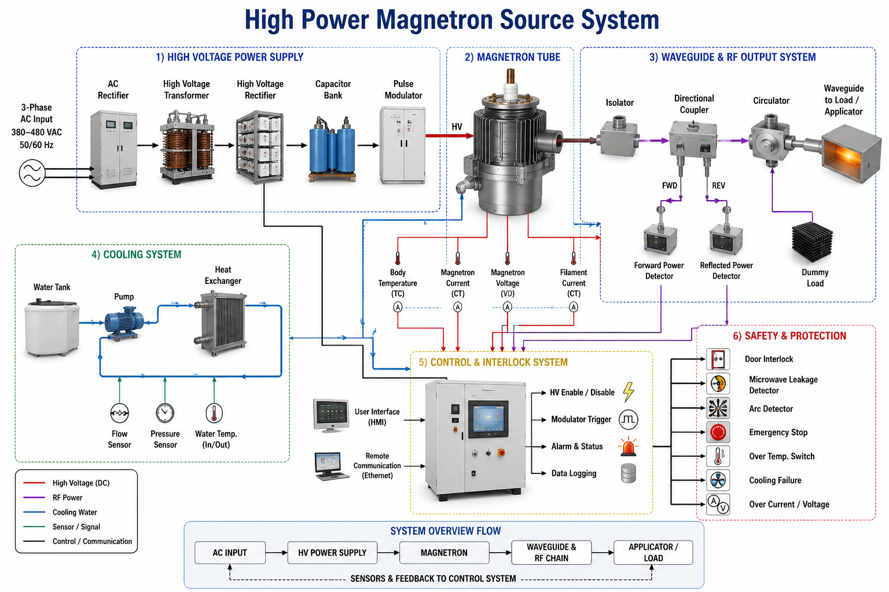
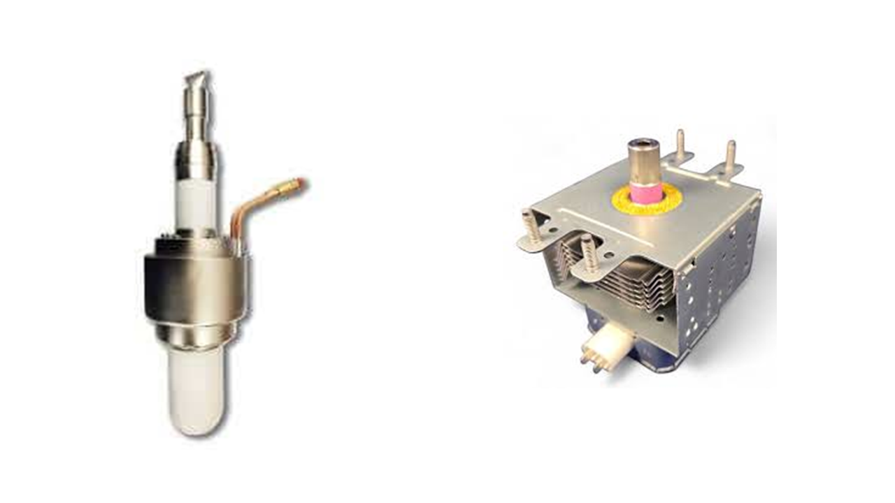
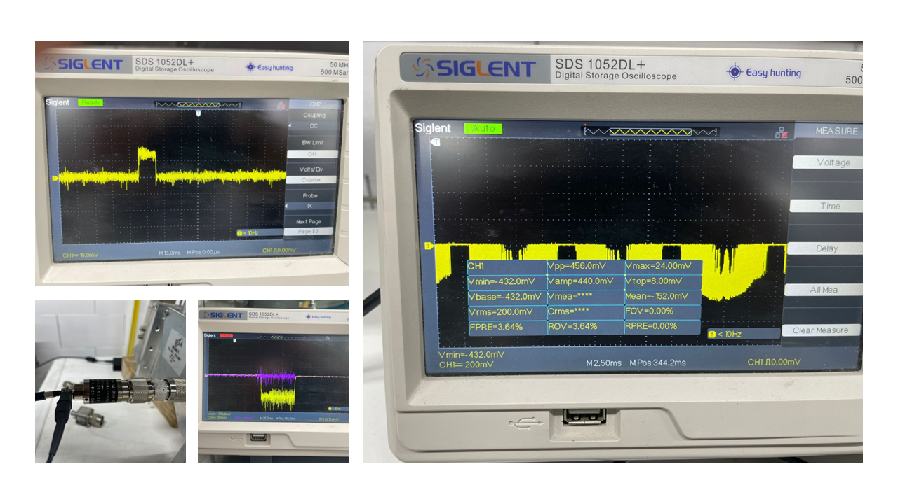
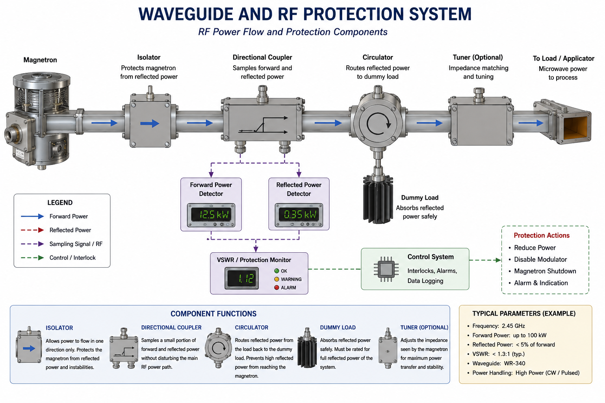
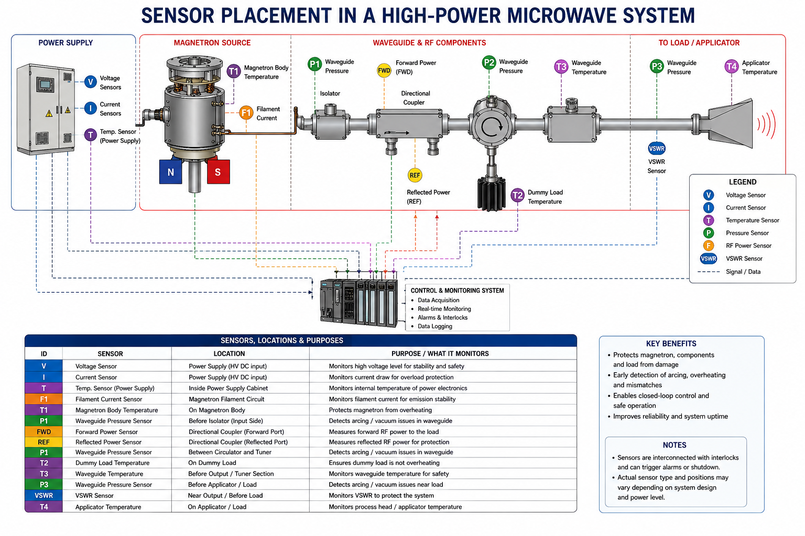

Introduction
One of the leading companies in Belgium working on industrial microwave technology for sustainable drying and heating applications is MEAM International . The company develops industrial microwave systems for drying, heating, decontamination, and material processing applications, particularly in the food and biomass industries.
MEAM focuses on energy-efficient microwave-based technologies that reduce thermal losses and improve process sustainability compared with conventional gas-based heating systems. Their microwave drying systems are designed to provide fast volumetric heating, improved product uniformity, reduced CO₂ emissions, and lower operational energy consumption.
The company is recognized in Belgium for promoting industrial microwave technology as a green electrification solution for industrial thermal processing and food drying applications. Their systems combine microwave engineering, thermal process optimization, heat recovery, and industrial automation technologies.
- Industrial food drying
- Biomass and waste drying
- Microwave pasteurization
- Microwave-assisted heating
- Industrial process electrification
- Low-CO₂ thermal processing systems
Additional information about MEAM International and their microwave technologies can be found at: https://meam-international.com/
High-power magnetron sources are widely used in industrial microwave heating, plasma systems, radar transmitters, food sterilization, material processing, and biomedical applications. Although the magnetron itself is a compact microwave source, building a reliable high-power microwave system requires careful integration of high-voltage electronics, RF waveguides, thermal management systems, sensors, and protection circuits.
In industrial systems, power levels may range from several kilowatts to hundreds of kilowatts. At these power levels, reflected power, thermal instability, arcing, and electromagnetic interference become major engineering challenges. Therefore, advanced monitoring and control systems are essential for safe and stable operation.
High-Power Magnetron Source System Block Diagram
A high-power magnetron source system is not only composed of the magnetron tube. It is a complete microwave generation platform that combines high-voltage power electronics, filament heating, cooling units, RF waveguide components, sensors, protection circuits, and control electronics. Each subsystem must operate together to generate stable and safe microwave power.
In this block diagram, the high-voltage power supply provides the electrical energy required by the magnetron tube, while the filament supply heats the cathode to emit electrons. The generated microwave power is then coupled into the waveguide system and delivered to the load or microwave applicator. Directional couplers, power detectors, circulators, dummy loads, and sensors are used to monitor forward power, reflected power, temperature, cooling flow, voltage, and current.
The control system continuously supervises these signals and can shut down the magnetron source when abnormal conditions occur, such as excessive reflected power, overheating, arcing, cooling failure, or over-current. This makes the system suitable for industrial microwave heating, drying, plasma generation, and material processing.

Figure 1 — High-power magnetron source system block diagram
What is a Magnetron?
A magnetron is a vacuum electronic device that converts DC electrical energy into microwave energy. It operates using the interaction between an electric field and a magnetic field inside a resonant cavity structure.
Electrons emitted from the heated cathode experience both electric and magnetic forces, causing them to rotate in complex trajectories around the cathode. This rotating electron motion excites resonant cavities inside the anode block, generating microwave oscillations at specific frequencies such as 2.45 GHz.

Figure 2 — Magnetron tubes: industrial high-power and kitchen microwave magnetrons
The image above compares two common types of magnetron tubes. The larger high-power magnetron tube is designed for industrial applications such as microwave heating, drying, plasma generation, and material processing. These tubes are built to operate at much higher power levels and usually require strong cooling systems, reliable high-voltage supplies, waveguide connections, and protection circuits.
The smaller magnetron tube is commonly used in kitchen microwave ovens. It typically operates around 2.45 GHz and generates microwave power suitable for heating food. Compared with industrial magnetrons, microwave oven magnetrons are simpler, lower-cost, and lower-power devices, but they still operate using the same physical principle involving the interaction between electrons, electric fields, magnetic fields, and resonant cavities.
- Cathode
- Anode cavity resonators
- Permanent magnets or electromagnets
- Output antenna or coupling probe
- Vacuum enclosure
- Cooling structure

Figure 3 — Measured microwave power signals from continuous-wave and pulsed magnetron systems
The figure above shows measured microwave power signals obtained from two different magnetron systems operating at 2.45 GHz. The upper signal corresponds to a continuous-wave industrial magnetron source with approximately 2 kW output power, where the microwave power is monitored using RF detector diodes and real-time power measurement circuitry.
The lower signal illustrates the output behavior of a pulsed high-power magnetron system. In pulsed microwave operation, microwave energy is generated in short-duration pulses with high peak power levels instead of continuous RF transmission. Pulsed magnetron systems are widely used in radar transmitters, plasma systems, pulsed heating systems, and high-power microwave experiments.
Real-time microwave power monitoring is extremely important in high-power magnetron systems because reflected power, arcing, impedance mismatch, thermal instability, or cooling failure can rapidly damage the microwave source and associated RF components. Therefore, RF detector circuits are commonly integrated into industrial microwave systems for continuous monitoring and protection.
RMS detector circuits are useful for estimating the effective microwave power delivered by continuous-wave or modulated magnetron systems, while peak detector diodes are commonly used in pulsed microwave systems to capture the peak envelope of microwave pulses with fast response time and high temporal resolution.
High-Voltage Power Supply Design
One of the most critical parts of a high-power magnetron system is the high-voltage power supply. Magnetrons typically require several kilovolts of DC voltage together with high current capability.
Modern systems may use transformer-based supplies or high-frequency switching converters. In pulsed microwave systems, modulators are used to generate short high-power microwave pulses with precise timing control.
- AC rectifier stage
- High-voltage transformer
- Capacitor bank
- Pulse modulator
- Protection relays
- Current limiting circuits
Waveguide and RF Output System
The generated microwave power is transferred through waveguides toward the load or applicator. Waveguides are preferred in high-power microwave systems because they provide low loss and high power handling capability.
The RF chain may include directional couplers, isolators, circulators, tuning elements, and dummy loads. These components help maintain stable power delivery and protect the magnetron from reflected energy.

Figure 4 — Waveguide and RF protection system
Sensors Used in High-Power Magnetron Systems
Sensors are essential for monitoring the health and stability of the system. Since magnetrons operate at high voltage and high RF power levels, small failures can quickly damage the system if not detected early.
Temperature Sensors
Thermocouples and RTDs are commonly used to monitor the temperature of the magnetron body, cooling water, waveguides, and power electronics. Thermal monitoring helps prevent overheating and extends the lifetime of the magnetron tube.
RF Power Sensors
Directional couplers are used to measure forward and reflected microwave power. High reflected power may indicate load mismatch, plasma instability, or waveguide faults.
Current and Voltage Sensors
Hall-effect sensors and current transformers are used to monitor cathode current and filament current. High-voltage dividers are used to safely measure the magnetron operating voltage.
Cooling Sensors
Water flow sensors, pressure sensors, and temperature sensors are used in water-cooled systems to detect cooling failure or blockage.
Safety Sensors
Microwave leakage detectors, door interlocks, emergency stop systems, and arc detectors are important safety components in industrial microwave systems.

Figure 5 — Sensor placement in a high-power microwave system
Cooling and Thermal Management
High-power magnetrons generate significant heat during operation. Without proper cooling, the cathode and resonant cavities may experience thermal deformation and reduced performance.
Depending on the power level, cooling may be implemented using forced-air systems or closed-loop water cooling systems. Industrial systems often include heat exchangers, pumps, temperature controllers, and thermal alarms.
- Hot spot formation
- Thermal expansion
- Frequency drift
- Reduced cathode lifetime
- Cooling channel blockage
Protection and Safety Systems
High-power microwave systems require fast protection mechanisms because arcing or reflected power can damage the magnetron within milliseconds.
Modern systems use microcontrollers, PLCs, or FPGA-based monitoring systems to continuously supervise the operating conditions.
- Over-temperature shutdown
- Over-current protection
- Reflected power protection
- Arc detection
- Cooling failure shutdown
- Door interlock system
- Emergency stop control
Industrial Applications
High-power magnetron systems are used in many industrial and scientific fields. Their ability to generate microwave energy efficiently makes them highly valuable for heating, plasma generation, and electromagnetic processing applications.
- Industrial microwave heating
- Food drying and sterilization
- Microwave chemistry
- Plasma generation systems
- Radar transmitters
- Ceramic sintering
- Biomedical thermal systems
Future Trends
Future high-power microwave systems are expected to become smarter and more adaptive through the integration of digital control systems, artificial intelligence, and advanced sensing technologies.
Real-time RF diagnostics, machine learning-based fault prediction, adaptive impedance matching, and digital twin technologies may significantly improve efficiency and reliability in industrial microwave systems.
Conclusion
High-power magnetron systems represent a combination of microwave engineering, high-voltage electronics, thermal science, sensing technology, and industrial automation. Designing reliable systems requires careful attention to RF power delivery, cooling systems, sensor integration, and protection mechanisms.
In modern industrial environments, advanced monitoring and intelligent control systems are becoming increasingly important for improving safety, efficiency, and long-term reliability.